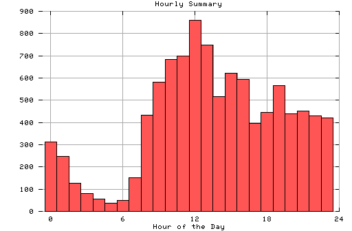

HTTP Server Hourly Summary
Covers: 10/23/95 to 10/29/95 (7 days).
All dates are in local time.
midnite: 312 : ################ 1:00 am: 247 : ############ 2:00 am: 126 : ###### 3:00 am: 81 : #### 4:00 am: 56 : ### 5:00 am: 36 : ## 6:00 am: 51 : ### 7:00 am: 150 : ######## 8:00 am: 433 : ###################### 9:00 am: 582 : ############################# 10:00 am: 682 : ################################## 11:00 am: 699 : ################################### noon: 859 : ########################################### 1:00 pm: 748 : ##################################### 2:00 pm: 517 : ########################## 3:00 pm: 622 : ############################### 4:00 pm: 595 : ############################## 5:00 pm: 396 : #################### 6:00 pm: 446 : ###################### 7:00 pm: 566 : ############################ 8:00 pm: 438 : ###################### 9:00 pm: 453 : ####################### 10:00 pm: 429 : ##################### 11:00 pm: 421 : #####################

Statistics generated at Sun Oct 29 08:32:24 MET 1995, (C) Oslonett AS, 1995.